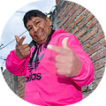
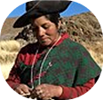

Descubrí la página buscando recursos para incluir a mis alumnos sordos. Me sorprendió lo
intuitiva que es y cómo enseña la LSA con ejemplos claros y videos. Ahora toda mi clase usa
algunas señas básicas, y eso cambió la forma en que nos comunicamos.
Por fin una página que nos representa. No es solo un sitio para aprender señas, es un espacio
donde nuestra lengua tiene valor y visibilidad. Me emociona ver que cada vez más personas oyentes
se interesan en comunicarse con nosotros.

La plataforma logra algo fundamental: enseñar la lengua de señas desde una perspectiva cultural y

Durante años sentí que la tecnología no estaba pensada para nosotros. Esta web cambió eso. PuedoInstagram: manosquehablan_ok
Por Whatsapp al numero: 387 039 9777